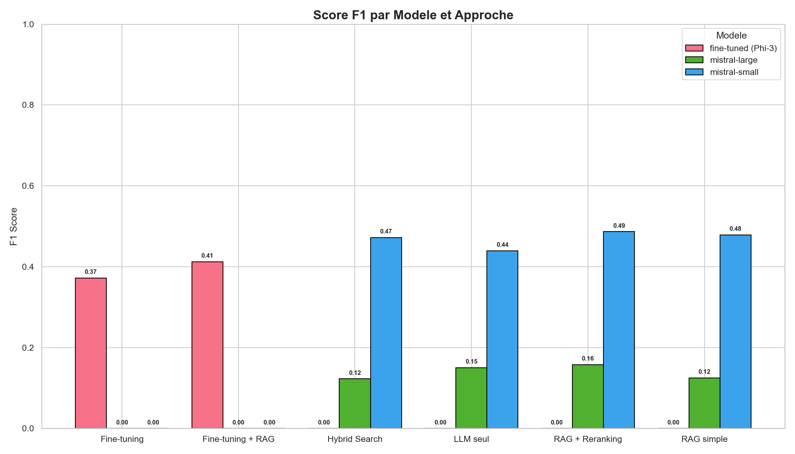
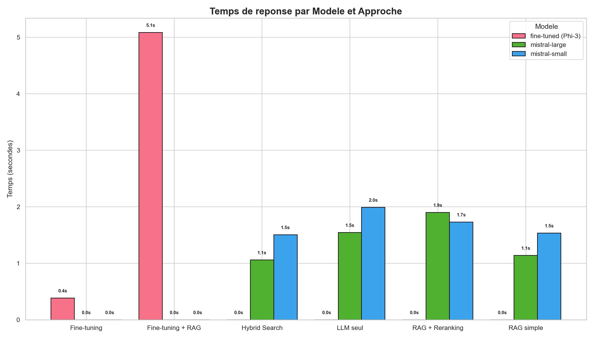
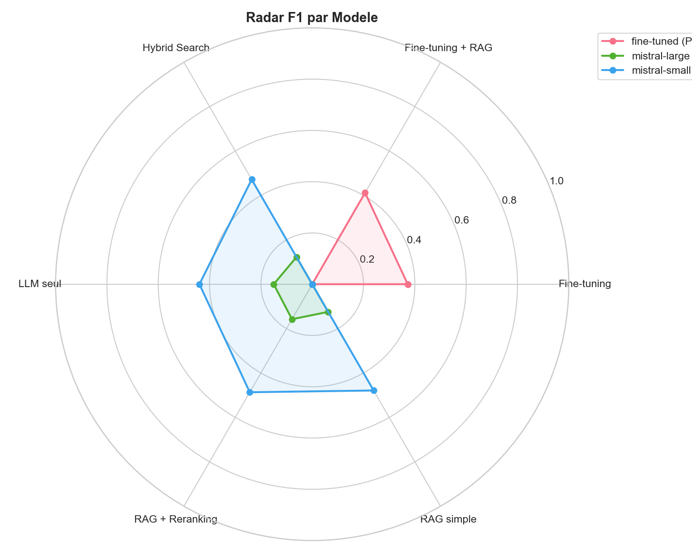

Les normes 3GPP (4G, 5G, 6G) font des milliers de pages. Les ingenieurs perdent du temps a chercher l'information.
Trouver la meilleure approche de Q&A pour le domaine telecom entre 6 methodes differentes.
Prompt direct, sans contexte.
Simple
ChromaDB + generation contextuelle.
Simple
Reclassement par Cross-Encoder.
Moyen
Vector Search + BM25.
Moyen
Modele entraine sur TeleQnA.
Complexe
Modele expert + contexte.
Complexe
React + Vite
Selection modele & approche
FastAPI (Python)
ChromaDB • Sentence Transformers • Cross-Encoder • BM25
FastAPI
Uvicorn
Python 3.10
ChromaDB
embeddings 384d
paraphrase-multilingual
MiniLM-L12-v2
Cross-Encoder
ms-marco-MiniLM
Mistral Small
Mistral Large
Phi-3 fine-tuned
Unsloth
LoRA (r=16)
React 18
Vite 5
Matplotlib
Seaborn
TOP_K=4
Recherche cosine
TOP_K=10 initial
TOP_K=4 final
0.7 Vector + 0.3 BM25
EM
Exact Match : le numero de l'option correcte est-il dans la prediction ? Metrique binaire.
F1
F1 semantique : similarite cosinus entre la prediction et la reponse attendue. Metrique continue (0 a 1).
EM = precision exacte (QCM). F1 = qualite semantique (redaction). Complementaires.
API stable, pas de GPU requis. Vocabulaire 3GPP capte. Deux tailles pour evaluer l'impact sur les QCM.
Modele compact (3.8B) fine-tunable sur GPU T4 (Colab). Inference locale 0.4s. Pas de cout API.
Comparaison : API cloud (Mistral) vs modele specialise local (Phi-3).

| Modele | Approche | EM | F1 | Temps |
|---|---|---|---|---|
| Mistral Small | LLM seul | 58% | 0.44 | 2.0s |
| RAG simple | 42% | 0.48 | 1.5s | |
| RAG + Reranking | 44% | 0.49 | 1.7s | |
| Hybrid Search | 38% | 0.47 | 1.5s | |
| Mistral Large | LLM seul | 28% | 0.15 | 1.5s |
| RAG simple | 26% | 0.12 | 1.1s | |
| RAG + Reranking | 22% | 0.16 | 1.9s | |
| Hybrid Search | 24% | 0.12 | 1.1s | |
| Fine-tuning (Phi-3) | FT seul | 60% | 0.37 | 0.4s |
| FT + RAG (Phi-3) | FT+RAG | 30% | 0.41 | 5.1s |


| Cas | Solution | Pourquoi |
|---|---|---|
| POC academique | Small + LLM seul | EM=58%, simple |
| Production API | Small + Reranking | F1=0.49, meilleur F1 |
| Local sans API | Phi-3 FT seul | EM=60%, 0.4s |
| A eviter | Mistral Large | F1=0.14, trop creatif |